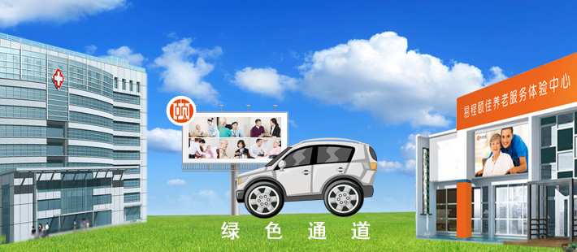

就医及转诊服务
您知道吗？北京仅2012年一年，9974家卫生机构接待了1.85亿次的门诊。您就医前如何选择哪家医院？哪个科室？哪个医生？ 如何减少就医过程中的奔波劳顿？如何解决持续治疗过程复杂的各项要求？如何能根据病情适时转诊，保证治疗的最佳时间？ 通过我们提供的就医及转诊服务，可以帮助您轻松解决这些困扰，子女再也不需要请假，因为我们专业服务会让您感到如同家人陪伴身边。
就医咨询
我们的专业服务人员会耐心细致根据您的情况，通过我们的智能云平台，帮助推荐最适合您的医院、科室和权威专家。
全程接送服务
可派遣专门人员为您提供专程的接送服务，节省您的宝贵时间。
院内全程陪同
在患者就诊期间我们将有专人提供全程导诊服务，温馨提示相关专项检查前准备事项。 协助办理挂号、化验、划价、取药、交费等相关事宜，为患者协调解决各种就医难题或突发事件。使患者的看病过程变得轻松，简单。
专业引导服务
建立电子化记录档案、记录医嘱、指导用药、预约专家、持续性诊疗
医院转诊服务
绿色通道，为患者需要提供不同医院的转诊就疗提供便捷